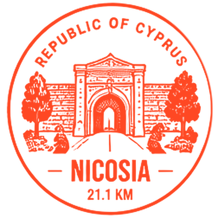
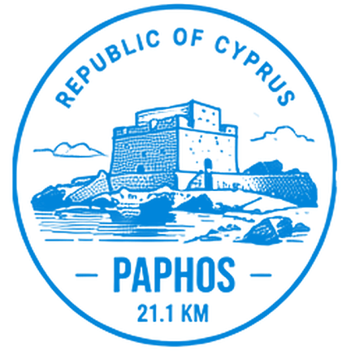
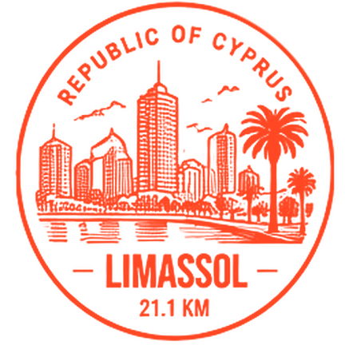
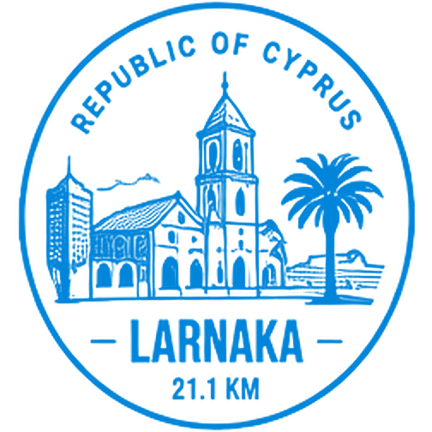
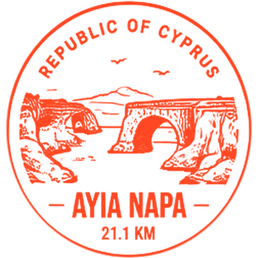
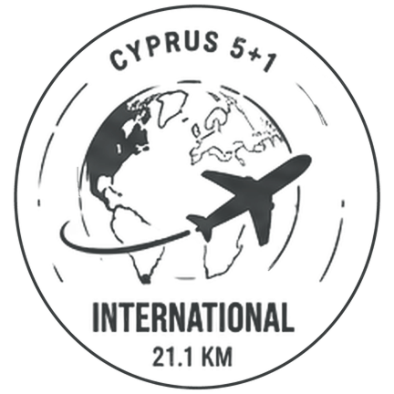

RUNNING PASSPORT · SEASON 2027
Six finish lines.
One passport.
Run the five Cyprus half marathons and one abroad. Every verified finish earns a stamp. Every pace is welcome.






The passport opens in December
First stamp: Nicosia Half Marathon, Sunday 24 January 2027.